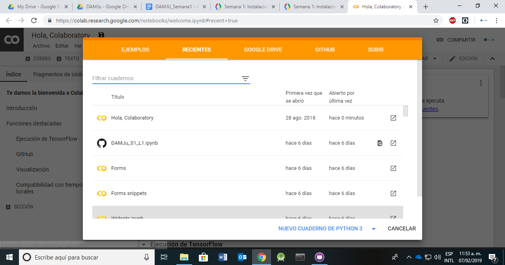
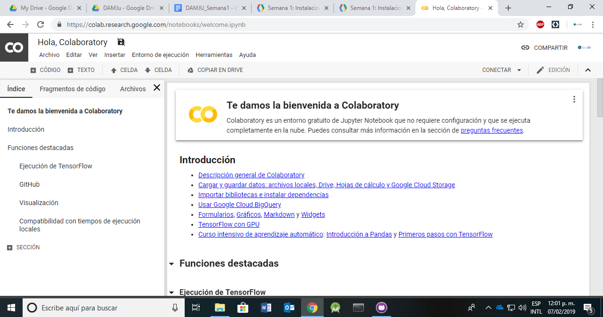

El veloz desarrollo de Python y el ecosistema de Jupyter, en parte por su popularidad para desarrollo de aplicaciones de Ciencias de Datos y Machine Learning, ha generado un amplio espectro de servicios externos que ofrecen una configuración completa a un precio muy accesible. En particular una de ellas el Google Colaboratory, un sistema que ofrece un ambiente completo y gratuito de Jupyter para el desarrollo de aplicaciones de bajo, medio y alto nivel.
Con este servicio reducimos la complejidad de gestionar y administrar una infraestructura de software y hardware. Es posible utilizar dicha infraestructura como reemplazo parcial de las libretas tradicionales (como la que usaron en la sección anterior), sin embargo, no podemos prescindir de la instalación local de Jupyter si queremos hacerlo.
En este paso vamos a utilizar la infraestructura de la nube de Google para ejecutar las libretas utilizando dicha tecnología, pero cuando necesitemos comunicarnos con el dispositivo móvil, usaremos el entorno de ejecución local que ya tenemos configurado.
Desafortunadamente las libretas en la nube de Google no son persistentes y el servicio cancela cualquier cálculo que dure más de 12 horas. Sin embargo nos permitirán desarrollar aplicaciones que de otra manera no podríamos generar con un costo mínimo (por ejemplo usaremos TensorFlow en un GPU sin costo alguno para entrenar un algoritmo de clasificación).
Vamos configurar el entorno de Jupyter disponible en la nube de Google para ejecutar código con el entorno local de Anaconda |
Accede a la infraestructura con el siguiente botón.
Si es necesario, ingresa tu información de usuario de Google. Una vez que hayas ingresado verás una pantalla como la siguiente:

En ésta ventana pueden elegir una libreta previamente existente o abrir una desde un repositorio en Google Drive o en Github o por medio de un URL. Selecciona NUEVO CUADERNO DE PYTHON 3 en la parte inferior derecha o CANCELAR. Esta última acción te mostrará una libreta con ejemplos. Se sugiere revisar para familiarizarse un poco con el sistema.

Collaborative permite conectar a un entorno de ejecución de Jupyter en un ordenador local. Puedes consultar más información en la documentación para los detalles. Aqui vamos a guiarlos en los pasos uno por uno. Vamos a asumir que ya tienen instalado el ambiente de Jupyter como lo describe el Laboratorio 1. Los siguientes pasos solo deben realizarse una vez.
jupyter_http_over_wsLa extensión está desarrollada por el equipo de Colaboratory. Para instalarla en una terminal escriban lo siguiente
pip install jupyter_http_over_ws
Cuando termine de ejecutarse el comando anterior escriban
jupyter serverextension enable --py jupyter_http_over_ws
Una vez hecha la configuración, copiar y pegar el siguiente comando en la consola para iniciar el servidor local y permitir conexiones con la nube a través de un websocket por el servidor de colab:
jupyter notebook --NotebookApp.allow_origin='https://colab.research.google.com' --port=8888 --NotebookApp.port_retries=0 --no-browser
El siguiente enlace te llevará a una libreta en el entorno de Colaboratory. Abrela y sigue los pasos indicados.
Las entregas se especifican empezando con el nombre del archivo y la descripción del contenido.